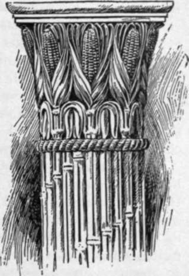

Law Library
Description
This section is from the book "The National Capitol. Its Architecture Art And History", by George C. Hazelton, Jr. Also available from Amazon: The National Capitol Its Architecture Art and History.
Law Library
To the north of the exit door of the vestibule, formerly the principal entrance to the old Senate wing, lie the historic room and alcoves now filled with the Law Library. This Library was established as a separate institution, though still under the direction of the Librarian of Congress, as it is also to-day, on July 14, 1832, when it was moved into a room to the south of the main Library hall. In 1848, it was removed to a room on the ground floor northwest of the center of the Capitol, close to its present quarters; and upon the removal of the Court, was again transferred, this time into the chamber lately occupied by the Court. In 1832, the number of law books was recorded as 2,011. To-day they number about 85,000 volumes, among which is a complete collection of foreign, federal and State reports, with innumerable text-books and rare and unique expressions of law. The rules here regarding the books are nearly the same as in the general Congressional Library.
This Library room was the Chamber of the Supreme Court from 1801 until the fire, and after the restoration, until i860, when that body moved into the old Senate Chamber upstairs, where it now sits. " The arches of the ceiling," writes Watterston in 1842, " diverge like the radii of a circle from a point near the loggea to the circumference. The light is admitted from the east and falls too full upon the attorney who is addressing the Court. This has, however, been' somewhat softened by transparent curtains and Venetian blinds. On the wall in a recess in front of the bench, is sculptured, in bold relief, the figure of Justice* holding the scales, and that of Fame crowned with the rising sun, pointing to the Constitution of the United States. On a stone bracket attached to the pier of one of the arches on the left of the fireplace, is a fine bust, in marble, of Chief Justice Ellsworth, and on a similar bracket, on the right, is a marble bust of Chief Justice Marshall. The members of the bar are accommodated with mahogany desks and armed chairs, within the bar, which is about two feet below the level of the floor of the loggea and lobby, and the audience with sofas, settees, and chairs. The Judges have each a mahogany desk and chair".
In speaking of the old Court room, Ben : Perley Poore says : "It is rich in tradition of hair-powder, queues, ruffed shirts, knee-britches and buckles. Up to that time no Justice had ever sat upon the bench in trousers nor had any lawyer ventured to plead in boots, nor wearing whiskers. Their Honors, the Chief-Justice and Associate Justices, wearing silk judicial robes, were treated with the most profound respect. When Mr. Clay stopped, one day, in an argument, and advancing to the bench, took a pinch of snuff from Judge Washington's box, saying, ' I perceive that your Honor sticks to the Skotch,' and then proceeded with his case, it excited astonishment and admiration. ' Sir,' said Mr. Justice Story, in relating the circumstance to a friend, ' I do not believe there is a man in the United States who could have done that but Mr. Clay.' "
Here were promulgated most of the great opinions of Chief Justice Marshall bearing upon Constitutional interpretation and other important questions, which have so materially shaped, as precedents, the opinions of later days. Marshall was appointed Chief Justice when Secretary of State, January 31, 1801, and continued in office until his death in 1835. Bryce, in his American Commonwealth, says: " Yet one man was so singularly fitted for the office of Chief Justice that the Americans have been wont to regard him as a special gift of favoring Providence. This was John Marshall, whose fame overtops that of all other American Judges more than Papinian overtops the jurists of Rome, or Lord Mansfield the jurists of England".
* This crude, colored bas-relief is by Franzoni. The design is used upon the certificates of admission to the Court.
Harriet Martineau gives the following pen-picture of a scene in this room in 1835, while the great Chief Justice, a few months before his death, was delivering the opinion of the court: "At some moments this court presents a singular spectacle. I have watched the assemblage while the chief-justice was delivering a judgment; the three judges on either hand gazing at him more like learners than associates; Webster standing firm as a rock, his large, deep-set eyes wide awake, his lips compressed, and his whole countenance in that intent stillness which instantly fixes the eye of the stranger; Clay leaning against the desk in an attitude whose grace contrasts strangely with the slovenly make of his dress, his snuff-box for the moment unopened in his hand, his small gray eye and placid half-smile conveying an expression of pleasure which redeems his face from its usual unaccountable commonness; the attorney-general [Benjamin F. Butler of New York], his fingers playing among his papers, his quick black eye and thin tremulous lips for once fixed, his small face, pale with thought, contrasting remarkably with the other two; these men, absorbed in what they are listening to, thinking neither of themselves nor of each other, while they are watched by the group of idlers and listeners around them ; the newspaper corps, the dark Cherokee chiefs, the stragglers from the Far West, the gay ladies in their waving plumes, and the members of either house that have stepped in to listen; all these have I seen at one moment constitute one silent assemblage, while the mild voice of the aged chief-justice sounded through the court".
One of the earliest cases of importance tried within these walls was that of Marbury v. Madison, where it was held that a legislative act not in accord with the Constitution of the United States could be declared void by the courts. This was a doctrine new to governments, and marked a distinct step in the advancement of the rights of the people. Shortly after, Cohens v. Virginia was argued, and the Court held that where a defence was made under a statute of the United States it was a case arising, within the meaning of the Constitution, " under a law of the United States," and, therefore, cognizable by the Supreme Court on writ of error; and that, under the section of the Judiciary Act of 1789 relating to writs of error from State courts, the borough court of Norfolk, being the last court in the State to which the case could go, a writ of error might be taken direct to the Supreme Court of the United States. Owing to the destruction of the Capitol by the British, this room, however, lost Webster's great appeal for his alma mater. The famous Dartmouth College case was tried in 1818, during the temporary sittings of the Court outside the Capitol. Within these narrow walls, loaded with tomes of law, the pale, studious, thin-lipped, large-browed Chief Justice Taney uttered the Dred Scott decision, which set the continent aflame. It held that a free negro of the African race, whose ancestors were brought to this country and sold as slaves, was not a " citizen " within the meaning of the .Constitution.
Continue to:
- prev: "Corncob" Columns
- Table of Contents
- next: The Crypt